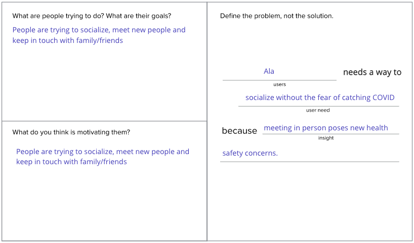

HOW MIGHT WE
At this point, we began brainstorming questions that would
better understand and explain Ala’s primary goals as someone who is looking for connection during
the COVID-19 pandemic.
1. How might we create safe COVID socializing that uses special
interest activities to foster new genuine connections that can last beyond COVID times?
2. How might we make planning online socializing less stressful?
3. How might we make COVID socializing like a game
(gamificaiton)?
4. How might we make COVID socializing activity or special interest
driven (instead of people driven)?
5. How might we make socializing during COVID relate to solving a
social issue (understanding people of different race/class/religion/political belief/country, or
somehow raising awareness or funds for an issue)?
6. How might we make socializing during COVID better than pre-COVID
(unique/distinct in a positive or special way)?
7. How might we assist in planning in-person socializing that
complies with safety protocols and while keeping it engaging?
8. How might we assist in planning online socializing that
cultivates a genuine connection?
Throughout this brainstorming we kept Ala’s persona in mind
and endeavored to see through her eyes. To do this, we began to distill our findings of Ala and
the problems she is facing.

In the end, we solidified our question to be:.
How might we assist in planning social interactions that comply with
safety protocols, are engaging (activity oriented and shared experience focused) and cultivate a
genuine connection?